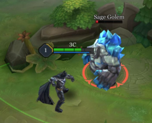
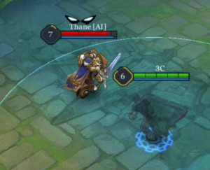
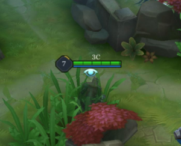

Jungle
A jungler rely on killing the camps (neutral monsters) in the jungle to keep up with their teammates or enemies in terms of gold and experience. A jungler play a major part in a standard 5v5 game, they could affect the early game into your favor or the enemies based on how you play it. Firstly, if you want to be a good jungler, you will need to understand the basics. Jungling is not just about killing the neutral monsters in the jungle and ganking, there is more to it. Being a jungler has to have map presence for your team. A jungler starts by clearing the jungle camps, gain level advantage over the laners and take advantage by ganking or securing objectives.

The most basic thing on a jungler, start the game with a Hunter’s Crossbow and head into the Sage (Blue) or Might (Red) Golem camp. Don’t ever start with the smaller jungle camps because you would not reach Level 2 by killing them first which will slow down your jungling speed. Clear the entire jungle camp afterwards to reach Level 4 which unlocks your heroes’ ultimate as soon as possible. Use Punish to secure and kill the Sage or Might Golem faster.
There are different ways to get ahead in gold or experience in the game. It could be ganking and killing the enemy heroes, counter-jungling or taking objectives such as Abyssal Dragon, Spirit Sentinel and Towers. Taking objectives is very important because it could provide a gold and/or experience advantage to the team that controls it which is why there is always competition to fight for it. You should have your Talent – Punish readied to secure them


Defeating monsters in the jungle earns gold for your team, which is used to purchase upgrades in the arena. Many of the monsters also grant special buffs and bonuses when defeated. Most importantly, the experience points from farming the jungle boost your team's abilities, giving them a potentially massive advantage over the other team.
Assigning someone to hit the jungle early in the match can make a big difference toward the end of the game.